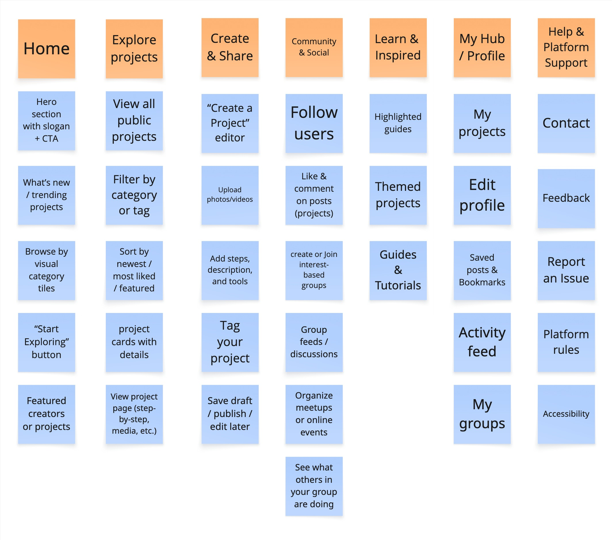

Site Map
This site map provides a visual representation of the structure and content of the HobbyHub website. It serves as a guide to help users navigate through the various sections and features available on the site.
This accordion shows the website structure. Expand each section to view pages and sub-pages, with notes on user/client needs
Landing page that sets the tone of the community. Features CTA and Intro
Supports first impressions, user orientation, low barrier entry for casual users.
Client goal: Welcoming and inclusive vibe.
Intro area that sets the tone and invites users to join or explore easily.
Highlights active and exciting content, keeping returning users engaged.
Provides an intuitive, low-pressure way to explore based on interest or aesthetics.
Discovery hub for exploring other users' creations. Encourages interaction, inspiration, and feedback.
Supports needs of browsing and connection feel, exposure to like minded people's projects and ideas. Client goal of encouraging sharing and discovery.
Full access to the community’s creations for open discovery and inspiration.
Lets users quickly find projects relevant to their interests or hobbies.
Promotes visibility and relevance by surfacing trending or popular content.
Dedicated space for users to publish their hobbies and creations. Core engagement area.
Supports the user's needs to contribute, meaningfully, build reputation. Client goal of user-driven content.
Core tool for building and publishing user-generated content.
Enables visual storytelling and documentation of hobby work.
Supports tutorial-style sharing for educational or replicable projects.
Improves discoverability and connects content to broader themes.
Heart of the community building effort. Enables users to connect, engage, and feel seen.
Supports encouragement, hype and drive, thoughtfu connection. Client emphasis on low pressure but meaningful interaction.
Facilitates ongoing connection and personalization of the experience.
Drives feedback, motivation, and conversational engagement.
Encourages micro-communities where users feel seen and supported.
Enables deeper interactions, planning, and social bonding in context.
Provides structured learning and featured content for those seeking growth and new ideas.
Supports knowledge sharing, exchange, learning and improving. Client's goal of flexible inspiration where all skill levels are welcome.
Editorial picks or expert content to spark exploration and learning.
Curated collections around a common hobby, goal, or event.
Practical how-to resources that build skills and confidence.
Personalized area for users to track and manage their activities and content.
Organization needs, content management, and client desire for autonomy and platform familiarity.
Central space for managing and revisiting personal contributions.
Allows users to present themselves in a way that reflects their interests.
Gives users a timeline of their actions to reflect or retrace.
Personal archive for future inspiration or project planning.
Support and feedback tools to ensure accessibility, safety, and responsiveness.
Patience and assistance, support all user's right to feel safe and heard. Goal of an inclusive, user-first platform.
Direct channel for support or general inquiries.
Empowers users to shape platform improvements with their voice.
Safety tool to flag inappropriate or broken elements of the site.
Outlines expected conduct and values to maintain a healthy space.